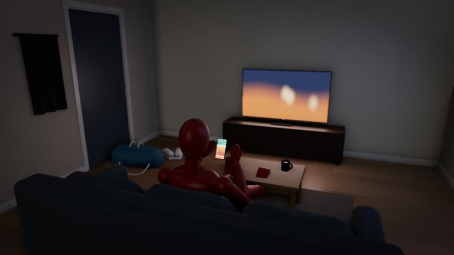

1
Teens sit because nothing they want needs a walk anymore.
Cor says For most of human history food had to be walked to, dug and carried home, so moving always bought something.
What really is one in four teens never active? whatreally.is/one-in-four-teens-never-active
The sum The body spends energy on movement only when something real is out there to move for, and for a 2026 teen that thing now sits on the phone.

One in four teenagers worldwide is not active on any day of the week and girls are falling furthest behind, a major new study finds.
the article
Researchers counted an active day as one on which an adolescent reported at least 60 minutes of moderate-to-vigorous physical activity, as recommended by the World Health Organization (WHO)
the article
The most active adolescents were in Finland, Canada and Serbia, averaging 4.5 to 4.8 active days per week
the article
Governments need to act faster, they suggest, with policies tailored to local contexts that reach the whole population and prioritise the least active adolescents
the study authors
Then
For 300,000 years, nobody exercised.
Now
Not wanting to go to the gym is completely normal.
How strong
1
Cor says For most of human history food had to be walked to, dug and carried home, so moving always bought something.
2
Cor says Humans are built to rest a lot, and foragers rested about as many hours a day as office workers.
3
Cor says For most of human history nobody exercised, because movement came with getting food and moving camp.
4
Cor says For most of human history people walked because the walk got them fed, and a cycling route feeds nobody.
5
Cor says In forager camps, children's play gave way to food-getting work as they grew, so growing up still meant moving.
Every brain system that could explain this, oldest at the top. The longer the bar, the more of the source it explains. The longest bar is the top score.
Score = 0.571 x what is at stake (survival 1, reproduction 0.67, standing 0.33) + 0.286 x share of details explained + 0.143 x distance from the camp. Phylogenetic age adds no points; it orders the stack and settles near-ties.
Why it wins. Energy budget with nothing to move for explains 5 of the 10 details in the source and sits on standing. Girls' drop as mate competition at puberty scores higher (0.54) but only explains who is hit harder, not why it happens.
Energy budget with nothing to move for Wins
Safety and strangers
Teens move for play and display in a group
Three components - desire, attraction, and pair bonding - that can work independently of each other. This system shapes much more of human behavior than reproduction itself.
Fisher's three-system model. Independent from M2 pursuit. HPG axis, not just brain circuits.
Hunger, satiety, and constrained total energy expenditure.
Pontzer's constrained energy model. Energy is redistributed, not burned.
Detects danger. Makes you freeze, fight, or flee.
Defensive system responding to threat cues.
Learns social rules through rough-and-tumble play. Requires real playmates.
Play system develops social skills. Absent in threatened or ill animals.
Source: Teens aren't getting enough exercise and the problem has barely changed in 15 years, Euronews, 4 Nov 2026
A teenager in 2026 can see every friend, have fun and eat dinner without taking a step.
The body is built to stay alive and have children, and it never spends energy on a step that buys nothing.
They say
Teens miss the WHO's 60 minutes because of weak policy funding, too few open spaces and safe walking or cycling routes, and for girls restrictive gender norms, safety concerns and a lack of suitable activities, so governments must act faster with tailored policies.
including restrictive gender norms, safety concerns and a lack of suitable activities
The study authors, quoted by Euronews
What it really is
The body spends energy on movement only when something real is out there to get, and a 2026 teen's friends, fun and food all come to the sofa.
What they get wrong. Funding, parks, safe streets and gender norms only decide where a teen could move, and faster government programmes still offer a 60-minute block that gets the body nothing today, so the study never asks why the body would bother.


Fifteen years of a WHO target moved the global average nowhere: 2.7 active days a week in 2010 and in 2025. Even the best countries, Finland, Canada and Serbia, reach only 4.5 to 4.8 days, far below a camp where moving fed you every day. No country or region is on track for the target, because what the body used to walk for now sits indoors.
For most of human history eating meant walking somewhere: adults covered roughly 9 to 15 km a day getting food, water and firewood, and even young children gathered a good share of their own food. Moving was how you got fed, and between trips people rested a lot. A camp child spent the day on foot in a self-run mixed-age group, with no timetable. A 2026 teen gets friends and food through a phone, sits through a school day adults timetabled, and rides to class on a route adults picked. The sum is simple: staying in costs nothing today, and the 60 minutes on offer buys a health promise decades away, so the body keeps the energy.
Girls fall furthest behind as they get older, averaging 2.4 active days against three for boys. In forager bands children's play gave way to food-getting work as they grew, mostly in mixed groups of boys and girls. Adolescence was when hard skills like hunting got taught. Now childhood play ends and nothing that moves replaces it, for girls and boys alike.
10 claims, 7 counterpoints, 6 not in Cor yet
For most of human history moving always bought food, and the body spends energy on movement that gets it something and saves it otherwise.
Forager adults covered roughly 9 to 15 km a day on foot getting food, water and firewood.
Food had to be walked to, dug, hunted and processed before it was eaten.
Even young forager children gathered a considerable amount of their own food, and play gave way to work as they grew.
Forager children played and learned mostly in self-run, mixed-gender, mixed-age groups.
Forager adults taught complex skills such as hunting mainly in adolescence.
Foragers rested about as many hours a day as industrial adults, much of it squatting or ground-sitting.
Exercise as a set-aside, prescribed health dose is a modern behaviour.
The global average stayed at 2.7 active days a week from 2010 to 2025, wealthier regions average four, poorer regions about two, and no country or region is on track for the WHO target.
Boys average three active days a week against 2.4 for girls, and girls' activity falls as they grow older.
Forager activity was modest, only about 15 percent above a desk worker's overall, and foragers sat as many hours a day as industrial adults; how many hours foragers worked is contested.
The Hadza activity figures cover adults in one population, and no Cor record gives forager adolescents' movement, so the teen-specific ancestral level is a gap.
The forager play and work records cover children up to 16 in mixed groups. No Cor record gives adolescent forager girls' movement or a reason it would differ from boys', so the girls' gap on this page rests on the source's numbers alone.
The link between digital technology use and teen wellbeing is contested and small, and no Cor record shows phones displace teen activity; the phone step is the frame's derivation and has not been measured.
Play-learning in children is contested: one forager group's children did less rough-and-tumble than neighbouring farmers' children, and a review found weak evidence that pretend play causes the gains credited to it.
Boys' higher activity matches a modern-sample finding that rough-and-tumble play is more common in boys; that is not a forager finding.
Late Pleistocene social life was probably more varied than the nomadic-egalitarian model, so free movement and mixed-age play may not be the universal default.
Apps and platforms are paid for teens' attention on the phone that carries their friends and fun.
A source on attention-based revenue models of social media and gaming platforms used by adolescents
Measured daily activity of forager adolescents aged 11 to 17, by sex.
Accelerometer or time-allocation studies of children and adolescents in mobile forager groups
Skill and strength built in adolescence raised a forager's standing and mating chances.
Smith 2004 on hunting skill and reproductive success; Apicella 2014 on strength, hunting reputation and reproductive success among Hadza men
Why adolescent girls' activity falls faster than boys' in forager settings, if it does.
Time-allocation or accelerometer studies of adolescent girls and boys in mobile forager groups
Moving in adolescence paid off differently for forager girls and boys in standing and mates, which would explain why girls' activity drops faster.
Time-allocation studies of adolescent girls' and boys' work and movement in mobile forager groups, with data on standing and marriage outcomes
Skill and strength built in adolescence raised a forager's standing and mating chances.
Smith 2004 on hunting skill and reproductive success; Apicella 2014 on strength, hunting reputation and reproductive success among Hadza men
Grades are Cor's. Every id opens its Cor page.
 NextWhat really is a bassist miming to a backing track?Bassist Marcelo Perez Schneider faked his playing for decades, but nobody can be the best when they're up against every bassist on the planet.
NextWhat really is a bassist miming to a backing track?Bassist Marcelo Perez Schneider faked his playing for decades, but nobody can be the best when they're up against every bassist on the planet.